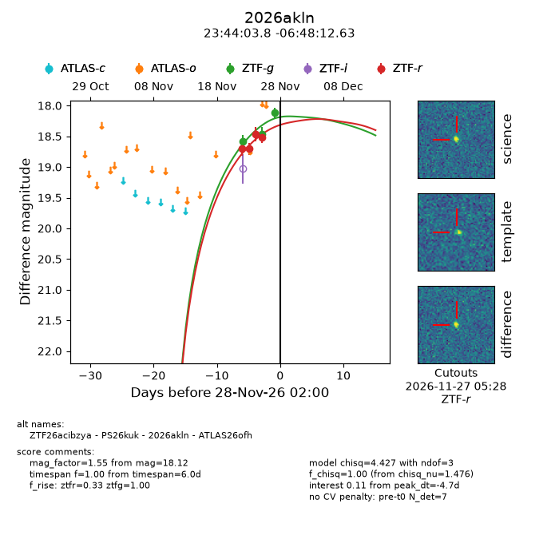
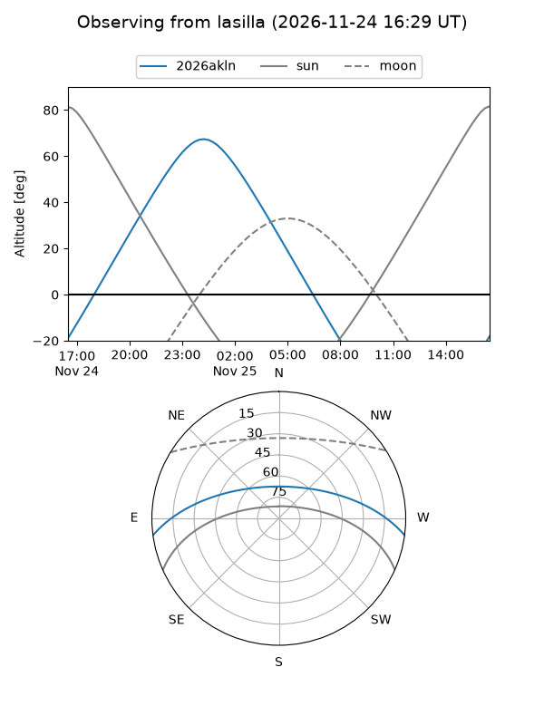
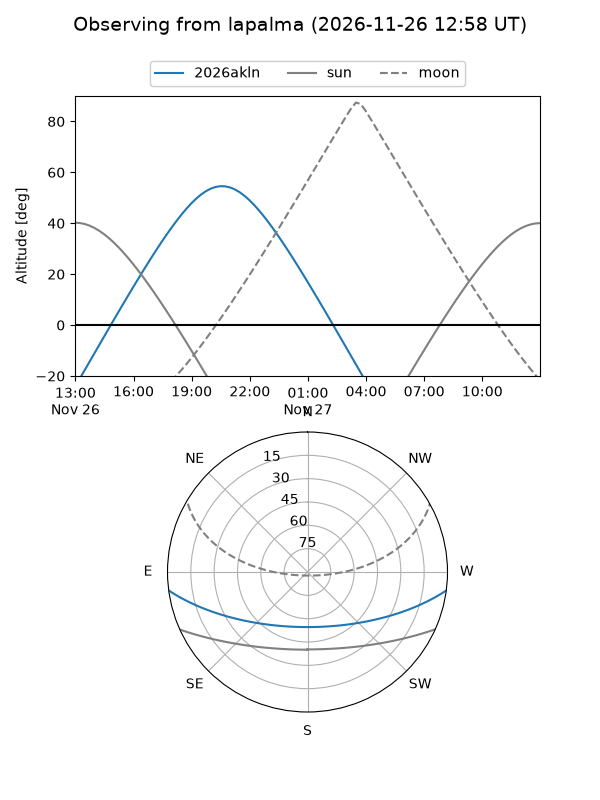
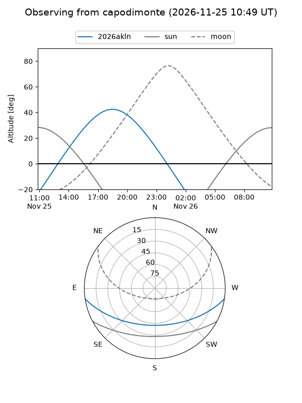
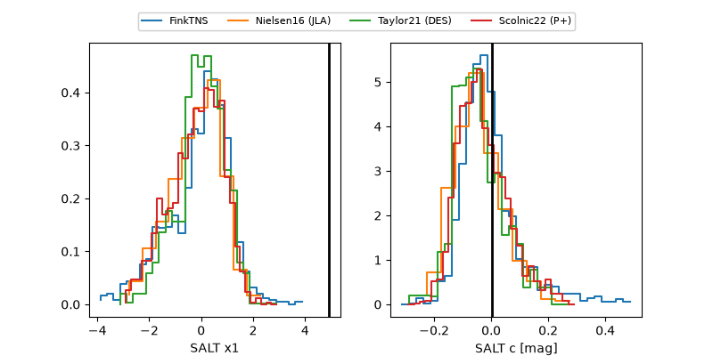

2026akln
Target 2026akln at 2026-11-28 02:01
Aliases and brokers:
FINK-ZTF: ztf.fink-portal.org/ZTF26acibzya
Lasair-ZTF: lasair-ztf.lsst.ac.uk/objects/ZTF26acibzya
ALeRCE-ZTF: alerce.online/object/ZTF26acibzya
YSE-PZ: ziggy.ucolick.org/yse/transient_detail/2026akln
TNS name: wis-tns.org/object/2026akln
Direct TNS query: direct search
alt names
ZTF26acibzya (ztf,fink_ztf)
2026akln (tns,yse)
ATLAS26ofh (atlas)
PS26kuk (panstarrs)
Coordinates:
equatorial (ra, dec) = 356.0158,-6.80351
equatorial (HMS+DMS) = 23:44:03.80,-06:48:12.63
galactic (l, b) = (81.6675,-64.13527)
Flags:
peak dt: -4.7
Photometry:
last ztfg=18.12, ztfr=18.52
3 ztfg, 4 ztfr detections
Lightcurve

Visibility



Additional plots
